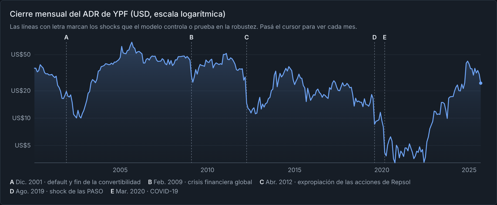
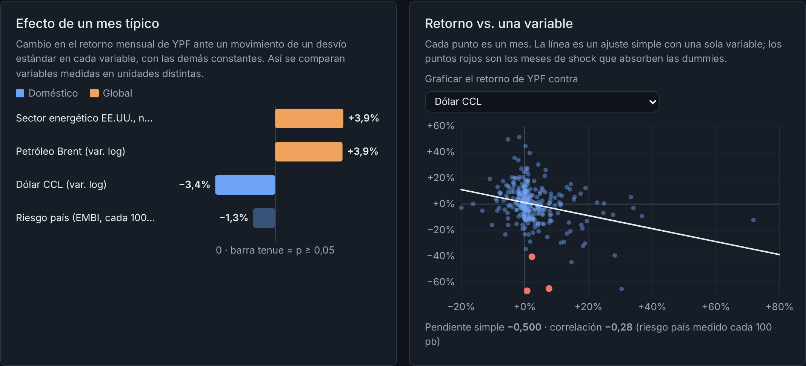

¿Qué mueve a la acción de YPF? Riesgo macro argentino vs. energía globalWhat moves YPF's stock? Argentine macro risk vs. global energy
Regresión múltiple sobre 25 años de retornos mensuales del ADR de YPF contra el riesgo país, el dólar CCL, el Brent y el sector energético de EE.UU., con errores robustos (HC1), dummies de shock y 15 pruebas de robustez. Publicado como dashboard interactivo y notebook reproducible. Multiple regression on 25 years of monthly YPF ADR returns against country risk, the CCL exchange rate, Brent and the US energy sector, with robust (HC1) standard errors, shock dummies and 15 robustness checks. Published as an interactive dashboard and a reproducible notebook.
Los factores energéticos globales y el tipo de cambio pesan parecido en el retorno de YPF. El riesgo país es débil en la muestra completa, pero se vuelve significativo al excluir el default 2001–2005. Global energy factors and the exchange rate carry similar weight in YPF's returns. Country risk is weak on the full sample but becomes significant once the 2001–2005 default years are excluded.

